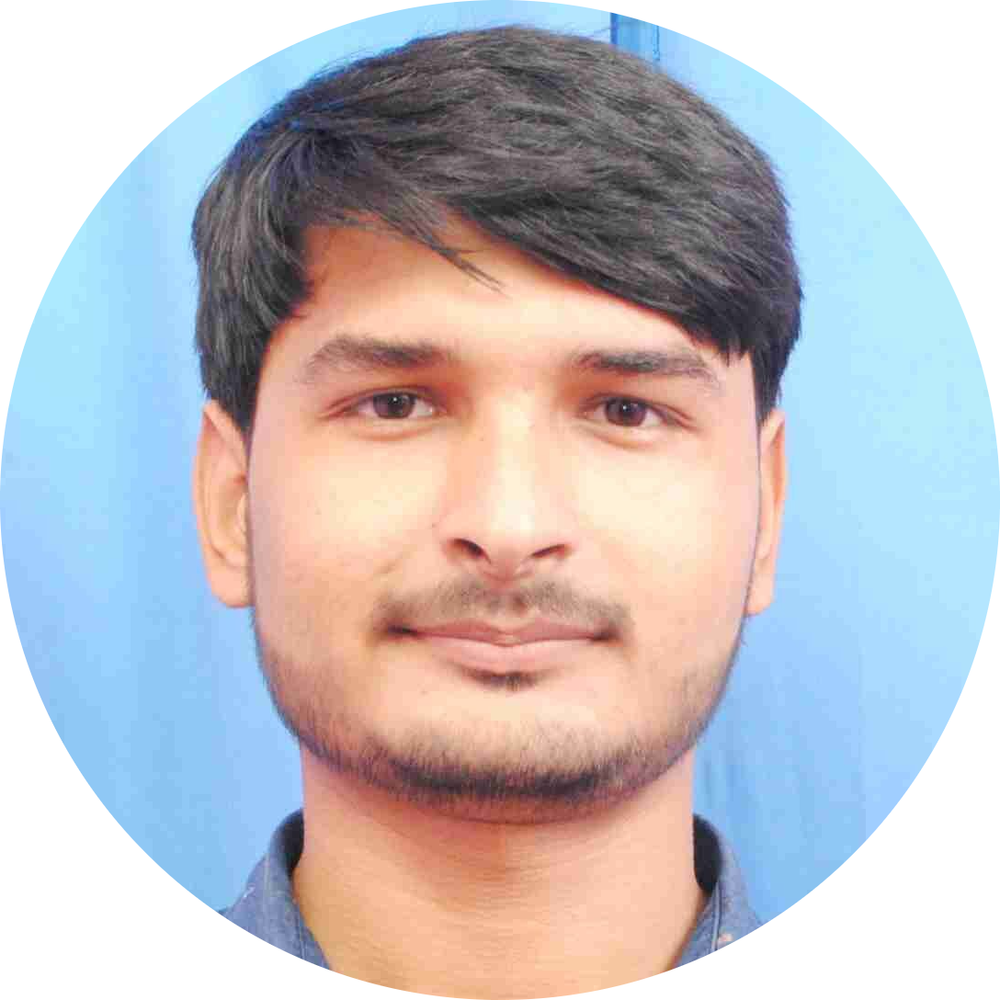

|  | Anurag SinghPhone: 7518141941 Email: singh.anurag77at@gmail.com Located in: Hardoi, UP, India |
As a computer science student, I have a good foundation in web development, data structures and algorithms, and C++ programming. I am always eager to learn new technologies and techniques. I possess good problem-solving skills and can work well in a team. I am seeking an internship opportunity or entry-level SDE roles to gain practical experience in the field.I am excited about the opportunity to apply my skills and knowledge to real-world projects and gain hands-on experience in the field. I am willing to put in extra effort and dedication to excel in my role.
| Dates | Degree |
|---|---|
| 2021-2024: | Masters of Computer Applications |
| 2018-2021: | Bachelor of Science |